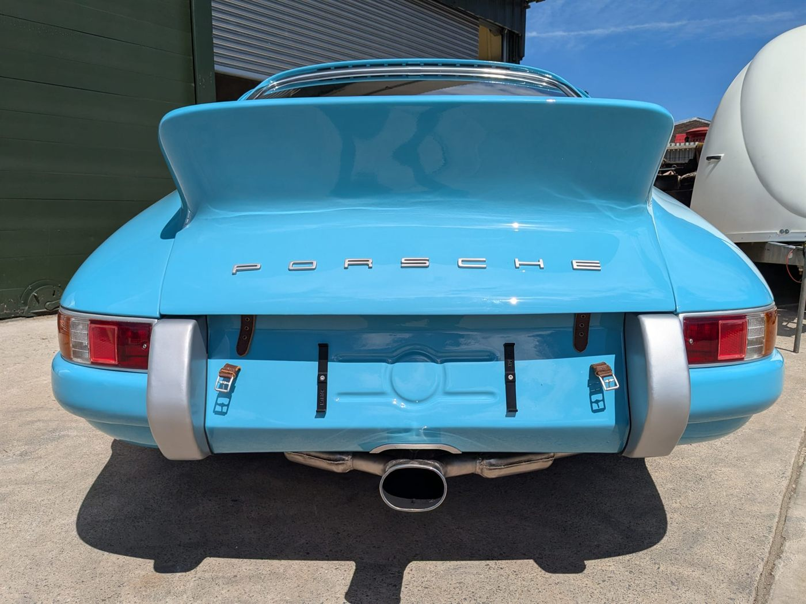

Three details worth a paragraph
Honesty
A new plate, so the old one isn't lying
The original Karmann body plate carries Farbton 6608. The car is now Farbton 6825. Rather than leave a plate that contradicted the car, a new one was made to the factory pattern, same body number, new paint number, and the original kept with the car.
Resourcefulness
Headlamps borrowed from a 356
The clear-glass lamps he wanted are no longer made, and the standard 912 lenses were not to his taste. So 356 units were modified to fit the 912's holders: clear glass, the pattern set inside, exactly the look intended.
Foresight
Spare wires, run before the loom went in
The burnt original was replaced by a loom built from nothing, one wire at a time. Unused wires were run inside the car while it was open, so anything added later can be fed cleanly rather than taped along the outside.

The signature
Umberto De Caires
He grew up in his father's workshop, an aerospace engineer's bench where engines and mechanisms were taken apart until they were understood. He trained as a mechanic in Venezuela on a course built around racing, where tolerances matter and shortcuts cost races, moved into custom motorcycles, then to Italy for bodywork and paint. England came next: years of independent work on Jaguar, Porsche, Alfa Romeo, Maserati and Aston Martin. 912R was built in that English workshop, alone, over seven years.
Last month he left England for Gavorrano, in the Maremma, Italy, where De Caires Classics is opening its own garage. 912R is the car that closes one chapter and opens the next.
For editors
UK registered, V5C held, chassis 452 279.
De Caires Classics · 912R Press Pack · Built in England